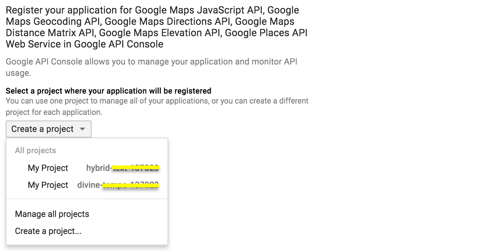
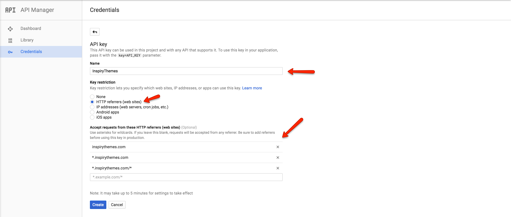
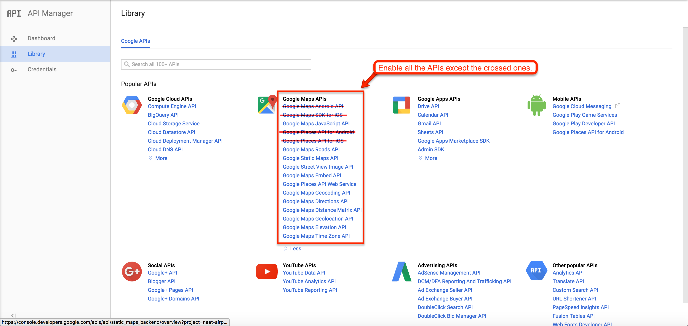
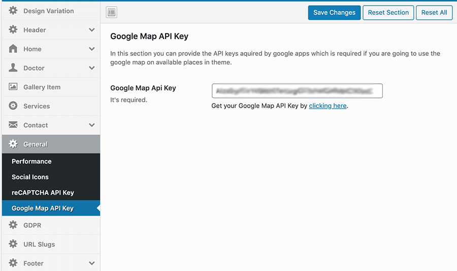

How to get Google Maps API Key for your website
!!! info As of June 2016, to keep Google Maps running smoothly on your website you need a special API Key. To get and setup the API Key for Google Maps please follow the instructions below.
-
Please go to Google API Console and login with your google account.
-
Create a new project or select an existing project then click on Continue to enable the API and any related services. 
-
Name your browser key and restrict it by adding your site URLs as shown in the screenshot below. 
-
Copy the generated Google Maps API key from the popup, you will need this to set in Theme Options panel (Dashboard » Theme Options » Contact » Google Map Api Key). Click on Close button to proceed.

-
By default most of the APIs are enabled but you have to enable all other APIs too in order to avoid any problems in the future. 
-
You need to enter this key in related place in Theme Options > General > Google Map API Key as seen in the following screenshot. 
How to verify domain with Google
Visit this link to verify domain with Google